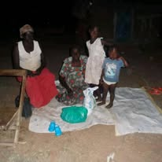

Safe Water Access
From Manual Digging to Community Handover
A visual timeline of the community borehole project, from digging and installation to handover.
Read the borehole story
Follow the work of All God's Children Foundation as we support children's education, promote water safety and work alongside families and communities in Uganda.
Every activity is an opportunity to learn, encourage children and strengthen communities. This page shares our programme priorities, activities and opportunities to work together.
Read stories from AGCF's community work and the people behind it.
Safe Water Access
A visual timeline of the community borehole project, from digging and installation to handover.
Read the borehole story
A Child's Dream
Meet a child who dreams of becoming a doctor and learn why access to education matters.
Read Josh's story
Family Support
Learn about a grandmother caring for her grandchildren and AGCF's support for a child's education.
Read her storyExplore the areas where AGCF is working to make a positive difference for children and families.

Education
AGCF works to help children from vulnerable families access education through school-related support, scholastic materials and encouragement to continue learning.
Our approach recognises that children need both educational opportunities and supportive environments to learn and grow.
Explore education support →
School Supplies
School supplies can help children prepare for class with greater confidence. AGCF's School Supplies Drive focuses on helping children from families facing financial difficulties access essential learning materials.
We welcome conversations with individuals, schools, churches and organisations interested in supporting this work.
Learn about the School Supplies Drive →
Child Safety
Water-safety awareness helps children recognise potential dangers around ponds, rivers, lakes, wells and other water bodies.
Through the AGCF Water Safety Campaign, we aim to promote safer choices, encourage adult supervision and help communities understand the importance of preventing drowning.
Explore the Water Safety Campaign →
Family & Community
A child's wellbeing is closely connected to the support available at home and in the community. AGCF works to encourage practical support, family engagement and stronger community relationships.
We value local knowledge and collaboration when identifying needs and considering appropriate responses.
Learn about family and community support →
Mentorship
Children benefit from encouragement, positive role models and opportunities to develop confidence and practical life skills.
AGCF's mentorship activities aim to encourage learning, personal development and positive choices in a safe and supportive environment.
Discover mentorship and life skills →
Safe Water Access
Access to safe water is important for health, daily life and community wellbeing. AGCF recognises the value of community water initiatives and practical water-safety education.
We welcome responsible collaboration that can help communities improve water safety and access.
Learn about safe water access →Visit our gallery to view available photographs from AGCF activities and community work.
Are you an individual, church, school, community group, business or organisation interested in working with AGCF? We welcome conversations about shared goals, practical skills, referrals and responsible partnerships.